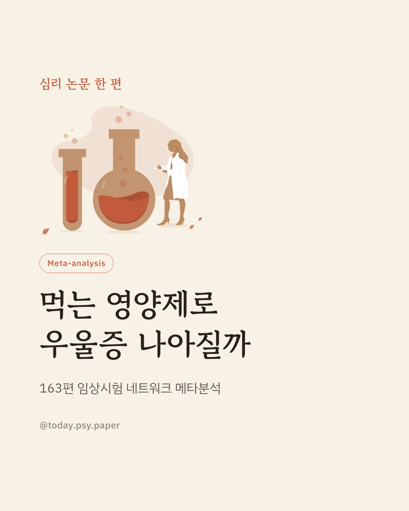
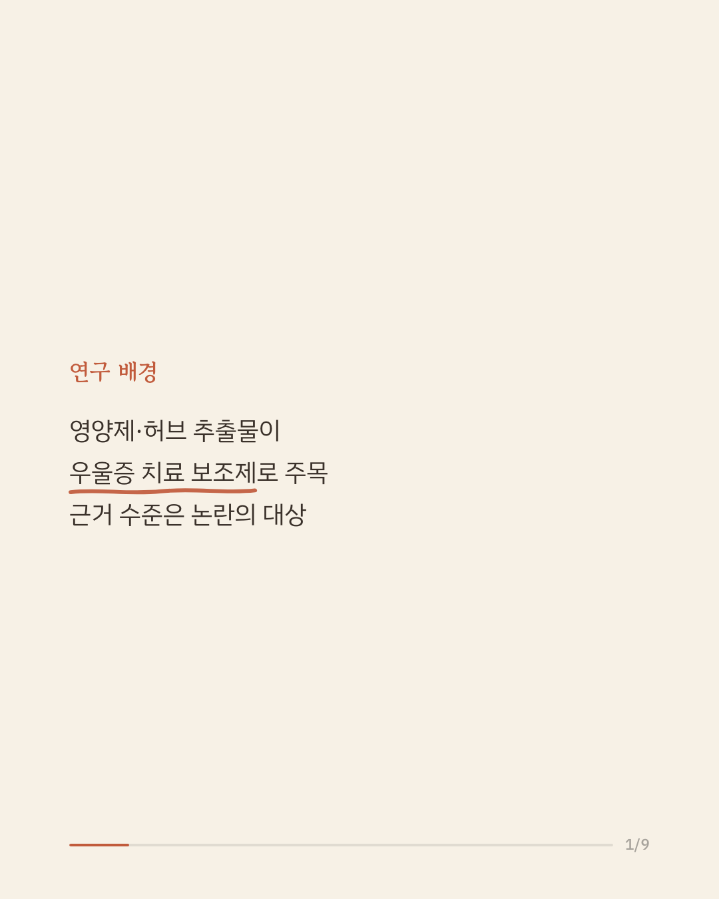
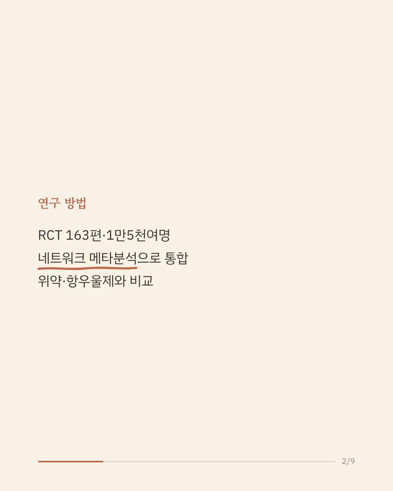
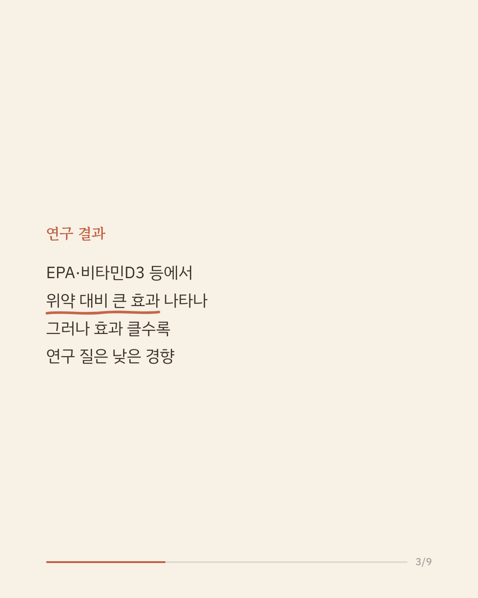
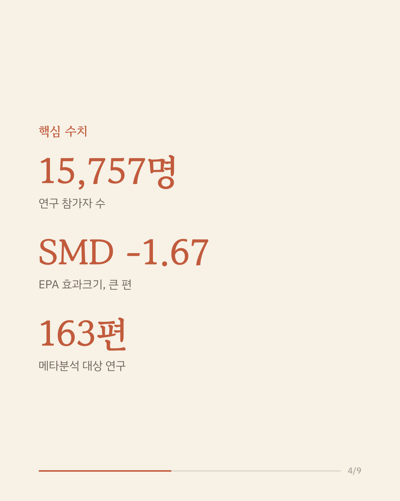
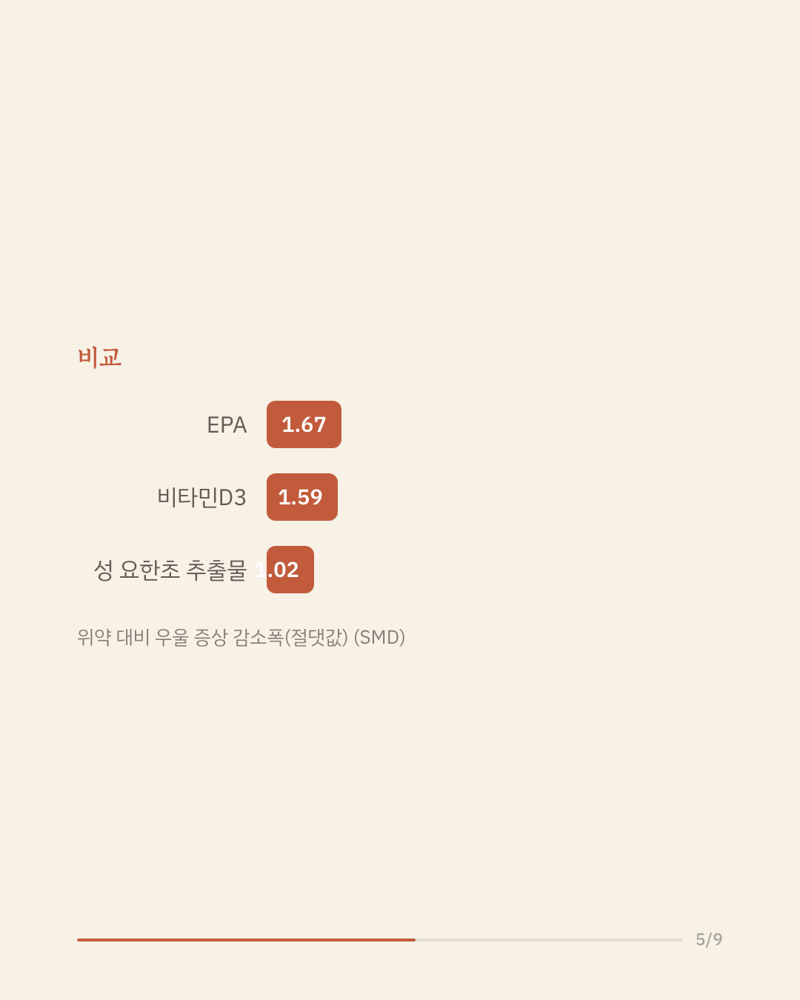
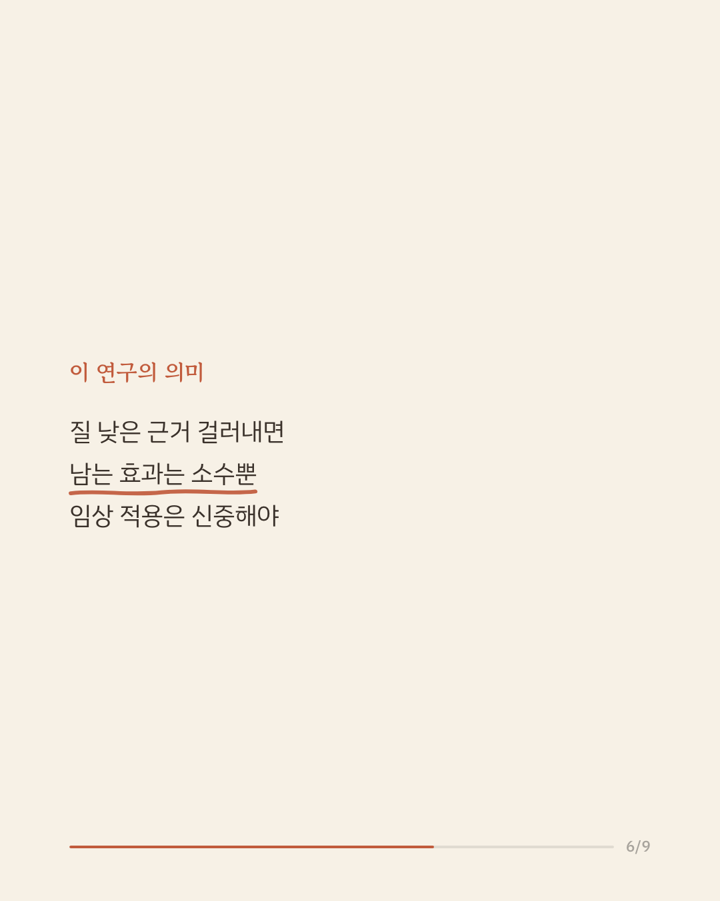
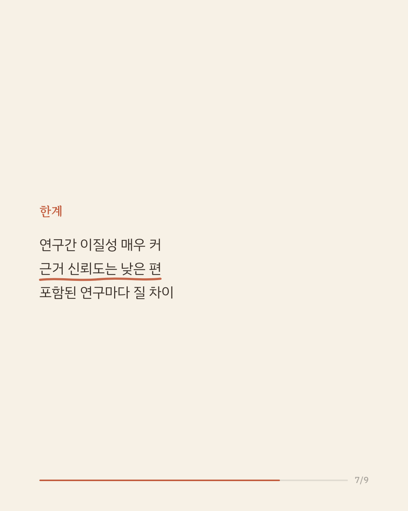
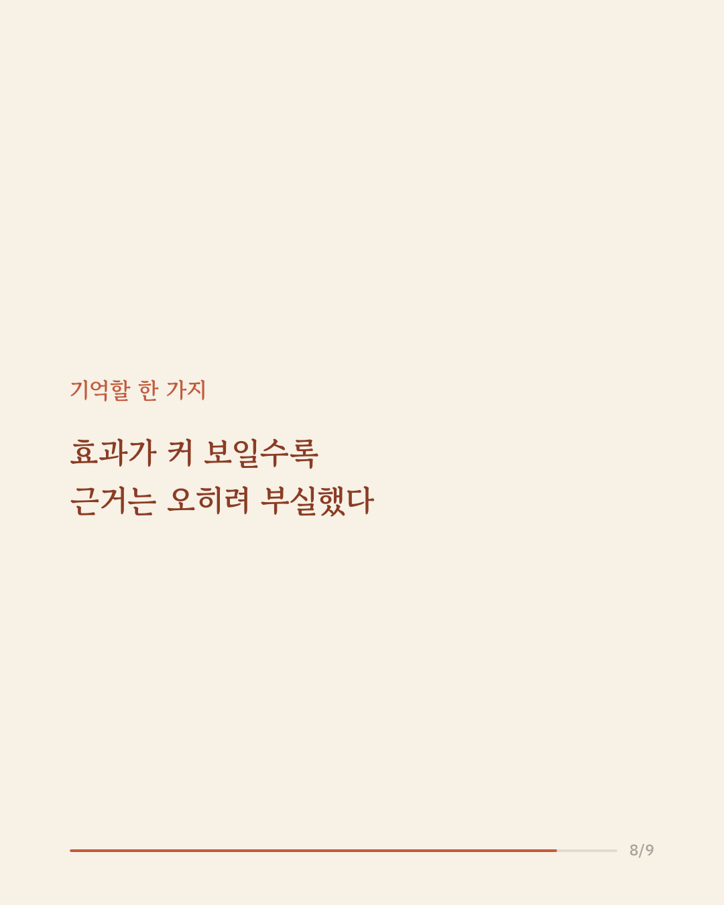
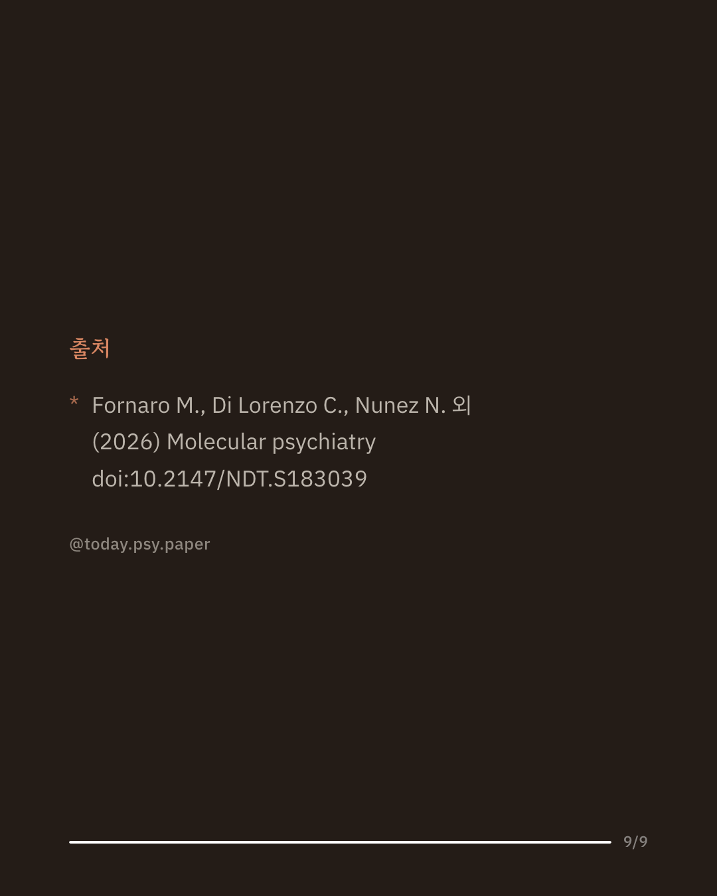

우울증에 영양제나 허브 추출물이 도움이 될 수 있다는 이야기, 한 번쯤 들어보셨을 겁니다. 이런 기대가 퍼지면서 실제 효과를 확인한 임상시험도 최근 크게 늘었습니다. 이번 연구는 위약 또는 항우울제와 비교한 무작위 대조시험 163편(참가자 1만 5,757명, 성분 조합 137가지)을 모아 네트워크 메타분석으로 통합했습니다. 분석 결과 오메가-3 지방산의 일종인 EPA, 비타민 D3, 성 요한초 추출물(ZE117) 등 일부 성분에서 위약보다 우울 증상이 크게 줄어드는 경향이 나타났습니다. 다만 연구 간 편차가 매우 컸고, 흥미롭게도 효과크기가 클수록 오히려 연구의 질은 낮은 경향이 확인되었습니다. 즉 눈에 띄게 좋아 보이는 결과일수록 더 의심해 볼 필요가 있다는 뜻입니다. 낮은 질의 근거를 걸러내면 남는 효과는 소수 성분에 그쳤고, 전체적인 근거 신뢰도도 낮음에서 매우 낮음 수준으로 평가되었습니다. 단일 연구이므로 확대 해석은 조심해야 합니다. (출처: Molecular Psychiatry, 2026) #임상심리 #정신건강정보 #논문리뷰 #영양제효과 #우울증정보
python3 publish.py 42680855